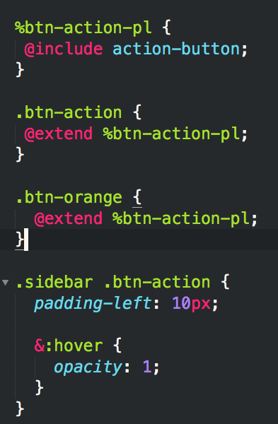

What is Sass
&
Why do I Care?
Slides Available on github: https://github.com/PaigePonzeka/reveal.js/tree/sass-talk
Who Are You?
- My name is Paige
- a Front-end Engineer
- on the Platypus Application Platform Team
Writing Vanilla CSS Sucks

So Let's Use Sass
But what the hell is it?
"It's CSS With super powers."
"It makes CSS fun again."
Sass is a CSS preprocessor

Nesting
The Inception Rule
Don't go more than four levels deep
& - Ampersand
Partials

Functions
The Power of Variables: A Scenario
This actually happened

Naming Conventions
And if we change again?

Sass Operations

Let's make our code better

What is a @mixin?
@mixin
@include the Mixin

Refactoring with For Loops
Refactoring Partner Icons

Refactoring Partner Icons - Map

Refactoring Partner Icons - Mixins

Refactoring Partner Icons - Includes
@extend
We use @extend heavily in the Storm buttons
Compiled CSS using @extends

@extend does bad things sometimes
Styling the button later

What it compiles to:
What can we do about this?

%Placeholders

That compiles to:
Compass